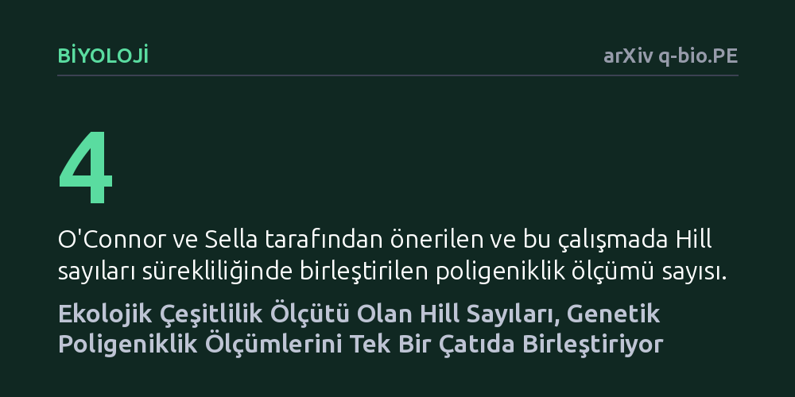

BIYOLOJI · arXiv q-bio.PE · 2026-10-10
Kalıtsal özelliklerin kaç genetik varyanttan kaynaklandığını ölçen farklı formüllerin birbiriyle ilişkisi matematiksel olarak incelendi. Araştırma, bu formüllerin ekolojideki Hill sayıları sürekliliğinde birleştiğini ve varyantların etkin sayısını veren tek tutarlı yöntem olduğunu gösterdi.
Karmaşık kalıtsal özelliklerin genetik mimarisini anlamak için kullanılan dağınık ölçüm yöntemleri yerine, ekolojinin zengin çeşitlilik kuramına dayanan evrensel ve tutarlı bir matematiksel standart sağlar.

İnsan genetiğinde boy, vücut kitle indeksi ya da kalp hastalığı riski gibi kalıtsal özelliklerin büyük çoğunluğu tek bir genin değil, genom genelindeki yüzlerce hatta binlerce farklı varyantın ortak etkisiyle ortaya çıkar. Biyolojide 'poligeniklik' olarak adlandırılan bu durum, bir özelliğin arkasındaki genetik çeşitliliğin ne kadar geniş olduğunu ifade eder. Ancak temel bir genetik özellik olmasına karşın, poligenikliğin örneklemlerde biçimsel ve standart bir matematiksel yöntemle ölçülmesi uzun süredir ihmal edilmiş bir alandı.
Bu boşluğu doldurmak amacıyla O'Connor ve Sella (2026), yarı-aritmetik ortalamalara dayanan dört farklı poligeniklik ölçümü önererek bir dizi matematiksel ilke ortaya koydu. Ne var ki, bu dört farklı ölçümün birbiriyle tam olarak nasıl bir ilişki içinde olduğu, küçük etkili varyantlar ile büyük etkili varyantlara nasıl yaklaştıkları ve hangi ölçümün ne zaman seçilmesi gerektiği açık bir soru olarak duruyordu.
Araştırmacı Maike L. Morrison, bu sorunu yanıtlamak için insan genetiği sınırlarının dışına çıkarak ekoloji yazınından faydalandı. Ekolojistler, bir habitattaki biyolojik çeşitliliği hesaplarken 'Hill sayıları' adı verilen bir istatistik ailesini kullanırlar. Bu matematiksel aile, ekosistemdeki nadir türler ile baskın türlerin çeşitlilik indeksine ne kadar etki edeceğini ayarlanabilir bir parametre sayesinde araştırmacının denetimine sunar.
Çalışma, herhangi bir biyolojik örneklem, insan deneği ya da genom tarama verisi içermeyen tamamen kuramsal ve matematiksel bir araştırmadır. Morrison, O'Connor ve Sella'nın önerdiği dört yarı-aritmetik ölçümü analitik olarak incelemiş, bunların ekolojideki çeşitlilik kuralları ve aksiyomlarıyla nasıl örtüştüğünü matematiksel ispatlarla ortaya koymuştur.
Analizin en çarpıcı bulgusu, daha önce ayrı alternatifler gibi sunulan bu dört ölçümün aslında Hill sayıları sürekliliği üzerindeki farklı noktalardan ibaret olduğunu kanıtlamasıdır. Morrison ayrıca, Hill sayılarının varyantların 'etkin sayılarını' ifade edebilen yegâne yarı-aritmetik ortalamalar olduğunu gösterdi; bu da onları poligenikliği ölçmeye uygun tek matematiksel seçenek haline getirmektedir.
Bu matematiksel köprü, ölçümler arasındaki farkları da berraklaştırmaktadır: İncelenen dört yöntemin tümü varyantların etkin sayısını vermektedir; ancak küçük katkılara sahip varyantlara daha fazla ağırlık veren formüller doğal olarak daha yüksek poligeniklik değerleri üretmektedir. Dahası çalışma, bağımsız varyant kümeleri bir araya geldiğinde ölçümün nasıl davranması gerektiğini kurala bağlayan çoğaltma ilkesini de genetik poligeniklik alanına taşımıştır.
Elde edilen sonuçlar, insan genetiğinde poligenikliği yorumlamak, kıyaslamak ve doğru ölçümü seçmek için birleştirici bir çerçeve sunmaktadır. Genetikçiler artık keyfi formüller arasında kaybolmak yerine, araştırmalarının odağına göre küçük etkili varyantları mı yoksa büyük etkili varyantları mı öne çıkaracaklarını bilinçli bir biçimde belirleyebilecek ve çalışmalarını ekolojinin sağlam kuramsal temeline oturtabileceklerdir.
Bununla birlikte, çalışmanın henüz hakem denetiminden geçmemiş bir önbaskı olduğunu ve gerçek insan verileriyle ampirik olarak test edilmediğini göz önünde bulundurmak gerekir. Kuramsal olarak kusursuz görünen bu matematiksel çerçevenin, karmaşık insan hastalıklarının genom verilerine uygulandığında ne kadar pratik ve güvenilir sonuçlar vereceği ilerleyen araştırmalarla netlik kazanacaktır.